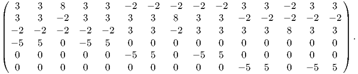

The Jelinek (1978) 15 measurement scheme is illustrated in Figure D.2. This is the procedure recommended in the manual distributed with the popular Kappabridge susceptiblity instruments. In the 15 measurement case shown in Figure D.2, the design matrix is:
|
| (D.1) |
and B = 1 _ 20×
 | (D.2) |

More recent models of the Kappabridge magnetic susceptibility instruments (e.g., KLY-3S and KLY-4S; see e.g., Pokorny et al., 2004) measure anisotropy by spinning the specimen around three axes (Figure D.3). For complete measurement and analysis details, see Gee et al. (2008). Here we just give the bare bones explanation.
The specimen is lowered into the measurement region and the susceptibility meter is set to zero. The deviatoric susceptibility is then measured in 64 positions per revolution for multiple (often eight) revolutions (see Figure D.4a.) These data must corrected for instrumental drift (red line in the figure), adjusted to have zero mean and stacked (Figure D.4b.) The data can be fit with a best fit theoretical curve (red line in the figure). The theoretical curve can be derived from the complicated design matrix (see Gee et al., 2008 for details). As one example, the measurement recorded at an angle θi (as shown in Figure D.3d) while spinning in Position 1 (Figure D.3a) is given by:

The best fit values for χ for the entire sequence of data gives the 2D Model for the set of data (see Figure D.4b). There are three such models for the measurement protocol, each yielding estimates of two of the three on-axis χ values (χ11,χ22,χ33). These measurements are all adjusted to zero mean susceptibility so one more measurement is required to determine the bulk susceptibility (the absolute susceptibility measured in the position shown in Figure D.3c or χ11 in Position 3.) The three 2D models plus the bulk measurement are combined as shown in Figure D.4d whereby the χ11 position in the 2D model for Position 3 is adjusted to the bulk measurement, and the best-fit 3D model is found that minimizes cross over errors for pairs of χ11,χ22,χ33. Once the best fit values for χ are found and standard deviation, the data can be treated as described in Chapter 13.
The magnitude of ARM is here denoted Ma. The particle anisotropy is denoted a and is given by:
![a = [Ma-||] ,
Ma ⊥ particle](WebBook3553x.png) | (D.3) |
where Ma|| and Ma⊥ are the magnitudes of the ARM acquired parallel to and perpendicular to the detrital particle long axis respectively. The normalized eigenvalues of the ARM tensor (qi) are defined as:
|
| (D.4) |
Assuming that the DRM anisotropy is identical to the orientation distribution function of particle long axes we can combine and rearrange Equations 13.19 and D.4 to get the relationship between the flattening factor f and the ARM anisotropy:
From the foergoing, measuring the AARM tensor yields the values for q, but determining values for a are more problematic. Vaughn et al. (2005) describe a technique whereby magnetic particles are separated from the matrix, then allowed to dry in an epoxy matrix in the presence of a magnetic field sufficient to fully align the long axes of the magnetic particles (say 50 mT). The AARM parallel to and perpendicular to the axis of alignment therefore gives a by Equation D.3.